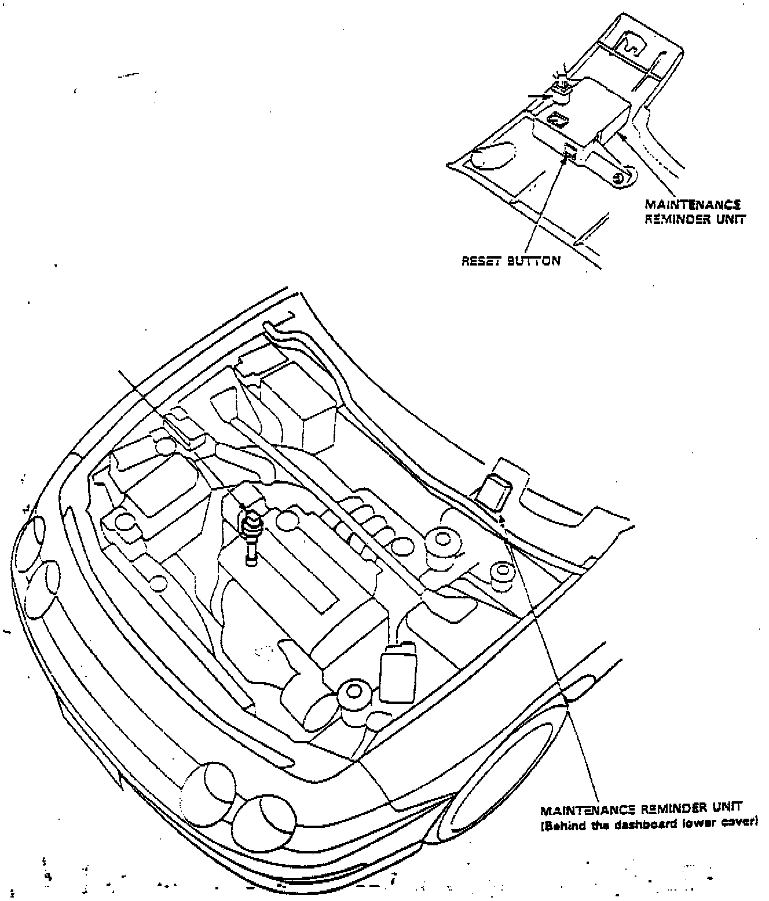

Maintenance Light Reset
Maintenance Reminder Unit Location And Reset Button.:

Based on signals received from the vehicle speed sensor (VSS), the microcomputer in the maintenance reminder unit, which is located behind the dashboard lower cover, computes the distances traveled. When you turn the ignition switch on, the reminder light in the gauge assembly will come on for two seconds (bulb check function). At 9,500 ± 160 km (6,000 ± 100 mile) intervals, the reminder light will glow for two seconds and then blink ten seconds after you turn the ignition switch on. This will repeat every time you turn the ignition switch on until the car reaches 12,070 ± 160 km (7,500 ± 100 miles).
Beyond the 12,070 ± 160 km (7,500 ± 100 mile) interval, the light will continue to glow after the bulb check until you turn the ignition switch off and reset the unit.
To reset the unit, the car must be parked and the ignition switch must be on. Press the reset button on the unit for more than three seconds and the reminder light will go off.
NOTE:
- Turn the ignition switch OFF before you remove the 5-P connector from the maintenance reminder unit. Otherwise you will cancel all data in the memory.
- The data will remain in memory even when the ignition switch is turned off, or if the unit is disconnected. When the ignition switch is turned on, and the car is driven, additional data will be stored.